set.seed(12345)
par(mar = rep(0.2, 4))
dataMatrix <- matrix(rnorm(400), nrow = 40)
image(1:10, 1:40, t(dataMatrix)[, nrow(dataMatrix):1])
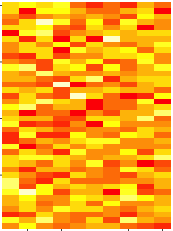
Roger D. Peng, Associate Professor of Biostatistics
Johns Hopkins Bloomberg School of Public Health
set.seed(12345)
par(mar = rep(0.2, 4))
dataMatrix <- matrix(rnorm(400), nrow = 40)
image(1:10, 1:40, t(dataMatrix)[, nrow(dataMatrix):1])
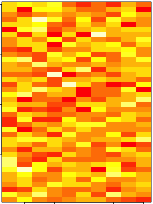
par(mar = rep(0.2, 4))
heatmap(dataMatrix)
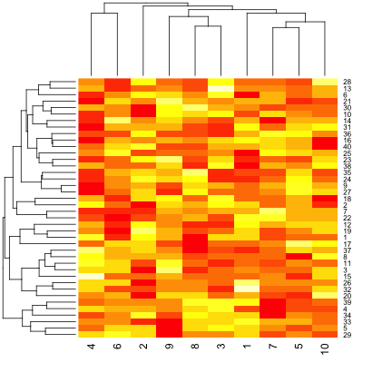
set.seed(678910)
for (i in 1:40) {
# flip a coin
coinFlip <- rbinom(1, size = 1, prob = 0.5)
# if coin is heads add a common pattern to that row
if (coinFlip) {
dataMatrix[i, ] <- dataMatrix[i, ] + rep(c(0, 3), each = 5)
}
}
par(mar = rep(0.2, 4))
image(1:10, 1:40, t(dataMatrix)[, nrow(dataMatrix):1])
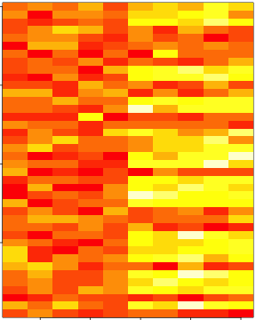
par(mar = rep(0.2, 4))
heatmap(dataMatrix)
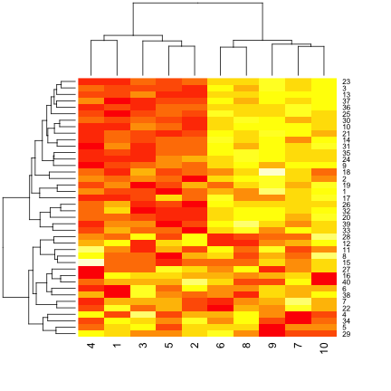
hh <- hclust(dist(dataMatrix))
dataMatrixOrdered <- dataMatrix[hh$order, ]
par(mfrow = c(1, 3))
image(t(dataMatrixOrdered)[, nrow(dataMatrixOrdered):1])
plot(rowMeans(dataMatrixOrdered), 40:1, , xlab = "Row Mean", ylab = "Row", pch = 19)
plot(colMeans(dataMatrixOrdered), xlab = "Column", ylab = "Column Mean", pch = 19)
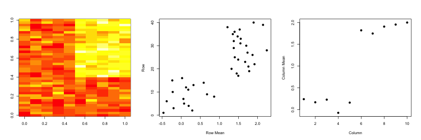
You have multivariate variables \(X_1,\ldots,X_n\) so \(X_1 = (X_{11},\ldots,X_{1m})\)
The first goal is statistical and the second goal is data compression.
SVD
If \(X\) is a matrix with each variable in a column and each observation in a row then the SVD is a "matrix decomposition"
\[ X = UDV^T\]
where the columns of \(U\) are orthogonal (left singular vectors), the columns of \(V\) are orthogonal (right singular vectors) and \(D\) is a diagonal matrix (singular values).
PCA
The principal components are equal to the right singular values if you first scale (subtract the mean, divide by the standard deviation) the variables.
svd1 <- svd(scale(dataMatrixOrdered))
par(mfrow = c(1, 3))
image(t(dataMatrixOrdered)[, nrow(dataMatrixOrdered):1])
plot(svd1$u[, 1], 40:1, , xlab = "Row", ylab = "First left singular vector",
pch = 19)
plot(svd1$v[, 1], xlab = "Column", ylab = "First right singular vector", pch = 19)
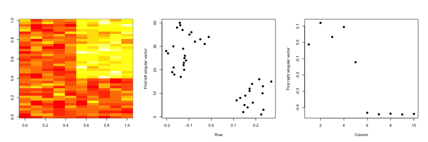
par(mfrow = c(1, 2))
plot(svd1$d, xlab = "Column", ylab = "Singular value", pch = 19)
plot(svd1$d^2/sum(svd1$d^2), xlab = "Column", ylab = "Prop. of variance explained",
pch = 19)
svd1 <- svd(scale(dataMatrixOrdered))
pca1 <- prcomp(dataMatrixOrdered, scale = TRUE)
plot(pca1$rotation[, 1], svd1$v[, 1], pch = 19, xlab = "Principal Component 1",
ylab = "Right Singular Vector 1")
abline(c(0, 1))
constantMatrix <- dataMatrixOrdered*0
for(i in 1:dim(dataMatrixOrdered)[1]){constantMatrix[i,] <- rep(c(0,1),each=5)}
svd1 <- svd(constantMatrix)
par(mfrow=c(1,3))
image(t(constantMatrix)[,nrow(constantMatrix):1])
plot(svd1$d,xlab="Column",ylab="Singular value",pch=19)
plot(svd1$d^2/sum(svd1$d^2),xlab="Column",ylab="Prop. of variance explained",pch=19)
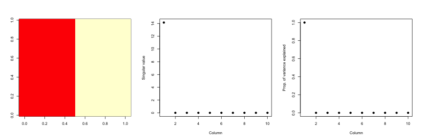
set.seed(678910)
for (i in 1:40) {
# flip a coin
coinFlip1 <- rbinom(1, size = 1, prob = 0.5)
coinFlip2 <- rbinom(1, size = 1, prob = 0.5)
# if coin is heads add a common pattern to that row
if (coinFlip1) {
dataMatrix[i, ] <- dataMatrix[i, ] + rep(c(0, 5), each = 5)
}
if (coinFlip2) {
dataMatrix[i, ] <- dataMatrix[i, ] + rep(c(0, 5), 5)
}
}
hh <- hclust(dist(dataMatrix))
dataMatrixOrdered <- dataMatrix[hh$order, ]
svd2 <- svd(scale(dataMatrixOrdered))
par(mfrow = c(1, 3))
image(t(dataMatrixOrdered)[, nrow(dataMatrixOrdered):1])
plot(rep(c(0, 1), each = 5), pch = 19, xlab = "Column", ylab = "Pattern 1")
plot(rep(c(0, 1), 5), pch = 19, xlab = "Column", ylab = "Pattern 2")
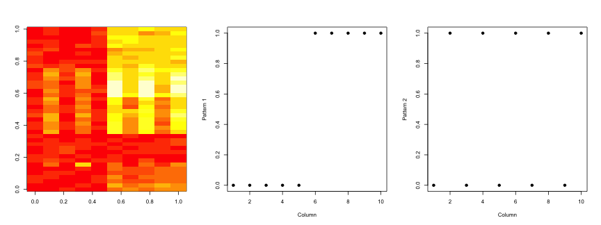
svd2 <- svd(scale(dataMatrixOrdered))
par(mfrow = c(1, 3))
image(t(dataMatrixOrdered)[, nrow(dataMatrixOrdered):1])
plot(svd2$v[, 1], pch = 19, xlab = "Column", ylab = "First right singular vector")
plot(svd2$v[, 2], pch = 19, xlab = "Column", ylab = "Second right singular vector")
svd1 <- svd(scale(dataMatrixOrdered))
par(mfrow = c(1, 2))
plot(svd1$d, xlab = "Column", ylab = "Singular value", pch = 19)
plot(svd1$d^2/sum(svd1$d^2), xlab = "Column", ylab = "Percent of variance explained",
pch = 19)
dataMatrix2 <- dataMatrixOrdered
## Randomly insert some missing data
dataMatrix2[sample(1:100, size = 40, replace = FALSE)] <- NA
svd1 <- svd(scale(dataMatrix2)) ## Doesn't work!
## Error: infinite or missing values in 'x'
library(impute) ## Available from http://bioconductor.org
dataMatrix2 <- dataMatrixOrdered
dataMatrix2[sample(1:100,size=40,replace=FALSE)] <- NA
dataMatrix2 <- impute.knn(dataMatrix2)$data
svd1 <- svd(scale(dataMatrixOrdered)); svd2 <- svd(scale(dataMatrix2))
par(mfrow=c(1,2)); plot(svd1$v[,1],pch=19); plot(svd2$v[,1],pch=19)
load("data/face.rda")
image(t(faceData)[, nrow(faceData):1])
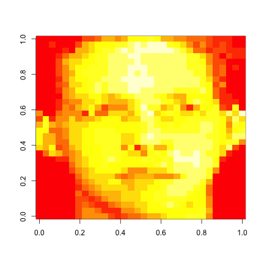
svd1 <- svd(scale(faceData))
plot(svd1$d^2/sum(svd1$d^2), pch = 19, xlab = "Singular vector", ylab = "Variance explained")
svd1 <- svd(scale(faceData))
## Note that %*% is matrix multiplication
# Here svd1$d[1] is a constant
approx1 <- svd1$u[, 1] %*% t(svd1$v[, 1]) * svd1$d[1]
# In these examples we need to make the diagonal matrix out of d
approx5 <- svd1$u[, 1:5] %*% diag(svd1$d[1:5]) %*% t(svd1$v[, 1:5])
approx10 <- svd1$u[, 1:10] %*% diag(svd1$d[1:10]) %*% t(svd1$v[, 1:10])
par(mfrow = c(1, 4))
image(t(approx1)[, nrow(approx1):1], main = "(a)")
image(t(approx5)[, nrow(approx5):1], main = "(b)")
image(t(approx10)[, nrow(approx10):1], main = "(c)")
image(t(faceData)[, nrow(faceData):1], main = "(d)") ## Original data
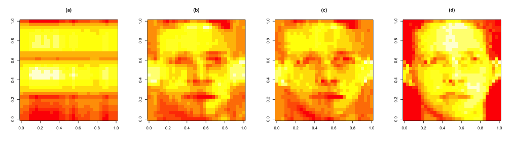